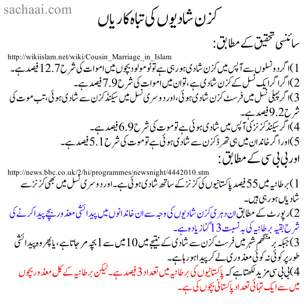

")

جی ہاں، کزن میرج سائنسی اور انسانی تجربے کے مطابق انتہائی خطرناک ہیں۔ اور جی ہاں، اسلام میں یہ ممنوع اس لیے نہیں ہیں کیونکہ آسمان میں کوئی اللہ وغیرہ موجود نہیں ہے اور محمد صاحب یہ وحی خود اپنی طرف سے بنا رہے تھے۔ چونکہ محمد صاحب فقط ایک انسان تھے، اس لیے انہیں کزن میرجز کے ان نقصانات کا علم نہیں تھا۔
اس بات کو سمجھئے کہ اسلام فقط کزن میرج کا ہی ذمہ دار نہیں ہے، بلکہ وہ ڈبل، ٹرپل اور جنریشن پر جنریش (ملٹیپل نسلوں میں) کزن میرجز کو حلال بنانے کا ذمہ دار ہے۔
اگر ایک ہی جنریشن میں ایک مرتبہ کزن میرج ہو تو بیماری کی شرح اتنی زیادہ نہیں ہوتی۔ لیکن اگر یہ کزن میرجز دو جنریشنز سے ہو رہی ہیں تو اس کی شرح میں اضافہ ہو جائے گا، اور اگر تین جنریشن سے کزن آپس میں ہی شادیاں کر رہے ہیں تو اور زیادہ اضافہ ہوتا چلا جائے گا۔
پاکستان اور اسلامی ممالک میں تو ڈیٹا زیادہ محفوظ نہیں ہوتا۔ لیکن برطانیہ میں جا کر جب پاکستانیوں نے دوسری اور تیسری جنریشن میں مسلسل کزن شادیاں کیں تو جو ڈیٹا سامنے آیا، اس کے مطابق برطانیہ میں پاکستانیوں کی تعداد فقط 3 فیصد ہے، لیکن جو معذور بچے برطانیہ میں پیدا ہو رہے ہیں، ان میں سے ایک تہائی، یعنی 33٪ فیصد بچے پاکستانی کمیونٹی میں پیدا ہو رہے ہیں۔
بی بی سی کی یہ رپورٹ دیکھئے:
http://news.bbc.co.uk/2/hi/programmes/newsnight/4442010.stm
یہ اس صورت میں ہے کہ صرف 55٪ پاکستانی کزن میرجز کر رہے ہیں۔ لیکن اگر 100٪ پاکستانی کزن میرج شروع کر دیں، تو پھر برطانیہ میں ایک تہائی کی بجائے دو تہائی 2/3 معذور بچوں کی پیدائیش پاکستانی کمیونٹی میں شروع ہو جائے گی۔
اور ڈان اخبار کی یہ خبر دیکھئے کہ جس کے مطابق پاکستان میں 77٪ معذور بچے اس جوڑوں کے گھر میں پیدا ہوئے ہیں جو کہ آپس میں کزنز ہیں۔
ۓ/http://www.dawn.com/news/1212811
تو اب بتلائیے کہ اور کون سا تجربہ رہ گیا ہے جس کی بنیاد پر آپ اس کا انکار کریں گے؟
اس لیے سعودی عرب اور دیگر گلف ممالک میں کزن میرج کے خلاف زبردست مہم چلائی جا رہی ہے اور اس پر پابندیاں لگائی جا رہی ہیں کیونکہ ان ممالک میں معذور بچوں کی پیدائش ایسے ہی کزن میرجز کی وجہ سے زبردست طریقے سے بڑھ چکی تھی۔
پچھلی زمانے میں تو پھر مسلمان کزن میرج کے خطرات سے بچ جاتے تھے کیونکہ وہ اکثر دوسرے ممالک کو فتح کرتے تھے اور وہاں کی عورتوں کو باندیاں بنا کر ان کا ریپ کرتے تھے اور ان سے پیدا ہونے والے بچے معذور نہیں ہوتے تھے کیونکہ وہ باندیاں کزن نہیں ہوتی تھیں۔
لیکن انتہائی مسئلہ پیدا ہوا جب مسلمان مزید دوسری قوموں کو فتح کر کے ان کی عورتوں کو باندیاں بنانے کے قابل نہیں رہے۔
اسلام کے پردے کے قوانین کی وجہ سے اسلامی ممالک میں سب سے زیادہ زور پر کزن میرج کی طرف ہو گیا۔ یہ کڑوے پر نیم چڑھنا تھا۔ چنانچہ اسلامی ممالک میں سب سے آسان شادی کزنز کے درمیان ٹہری کیونکہ وہاں پر پھر لڑکا اور لڑکی ایک دوسرے کو دیکھ پاتے تھے اور بات چیت کر پاتے تھے۔ لیکن اس کا نقصان پھر معذور بچوں کو اٹھانا پڑا۔
دل دکھتا ہے جب کزن میرجز کی وجہ سے دوستوں اور خاندان میں ایسے معذور بچے دیکھنے کو ملے۔
سائنسی تحقیق کے مطابق (لنک):
1) اگر دو نسلوں سے آپس میں کزن شادی ہو رہی ہے تو نومولود بچوں میں اموات کی شرح 12.7 فیصد ہے۔
2) اگر اگر ایک نسل کے کزن شادی ہے، تو ان میں اموات کی شرح 7.9 فیصد ہے۔
3) اگر پہلی نسل میں فرسٹ کزن شادی ہوئی، اور دوسری نسل میں سیکنڈ کزن سے شادی ہوئی، تب موت کی شرح 9.2 فیصد ہے۔
4) اگر سیکنڈ کزنز کی آپس میں شادی ہوئی ہے تو موت کی شرح 6.9 فیصد ہے۔
5) اور اگر خاندان میں ہی تھرڈ کزن سے شادی ہوئی ہے تو موت کی شرح 5.1 فیصد ہے۔
اور بی بی سی (لنک) کے مطابق:
1) برطانیہ میں 55 فیصد پاکستانیوں کی کزنز کے ساتھ شادی ہوئی ہے۔ اور دوسری نسل میں بھی کزنز سے شادیاں ہو رہی ہیں۔
2) رپورٹ کے مطابق ان دہری کزن شادیوں کی وجہ سے ان خاندانوں میں پیدائشی معذور بچے پیدا کرنے کی شرح بقیہ برطانیہ کی بہ نسبت 13 گنا زیادہ ہے۔
3) جبکہ برمنگھم شہر میں فرسٹ کزن سے شادی کے نتیجے میں 10 میں سے 1 بچہ مر جاتا ہے، یا پھر وہ پیدائشی طور پر کوئی نہ کوئی معذوری لے کر پیدا ہو رہا ہے۔
4) بی بی سی مزید لکھتا ہے کہ پاکستانیوں کی برطانیہ میں تعداد 3 فیصد ہے۔ لیکن برطانیہ کے کُل معذور بچوں میں سے ایک تہائی تعداد پاکستانی بچوں کی ہے۔
ڈان اخبار کی رپورٹ کے مطابق (لنک): 
- ونیورسٹی آف بریڈفورڈ اور Leeds نے پاکستان میں ایک مشترکہ سٹڈی میں بتایا کہ پاکستان میں جتنے معذور بچے ہیں، ان میں 77٪ کزن شادیوں کے نتیجے میں پیدا ہوئے ہیں۔
- چارسدہ کے ایک علاقے میں 80٪تا 90 فیصد لوگوں نے کزن شادیاں کیں۔ نتیجہ یہ ہے کہ پچھلے 40 سالوں سے چارسدہ کے اس علاقےمیں ہر تیسرے گھر میں بچے پیدائشی معذور پیدا ہو رہے ہیں۔علاقے کے لوگوں کو بھی اس وجہ کا پتا ہے، مگر پھر بھی وہ مذہب اور رواج کی وجہ سے کزن شادیاں کر رہے ہیں۔
اور The News (لنک) اخبار کی خبر بھی لازمی پڑھیے کہ پاکستان میں کزن شادیوں کی وجہ سے پوری دنیا میں سب سےزیادہ بہرے بچے پاکستان میں ہیں، اور کتنے بڑے مسئلے سے پاکستان دوچار ہے۔
قریبی خونی رشتے داروں میں مشترکہ جینز شیئر کرنے کی شرح یہ ہے:
1) والدین/اولاد: 50٪ جینز
2) بہن/بھائی: 50٪ جینز
3) چچا/بھتیجی: 25٪ جنیز (سوتیلے بھائی بہن میں بھی یہ شرح 25٪ ہے)
4) فرسٹ کزنز: 12.5 ٪ جینز (جبکہ ڈبل فرسٹ کزنز میں یہ شرح چچا بھتیجی کی طرح 25٪ ہے)
5) سیکنڈ کزنز: 3.125%
امریکہ کی کئی ریاستوں میں کزن شادی پر پابندی ہے، اور حتیٰ کہ اس پر Criminal Offence کے تحت سزا ہے (لنک)۔ وجہ یہ ہے کہ کزن شادی بھی incest ہی ہے۔
اگر واقعی میں کوئی اللہ موجود ہے، تو تب بھی وہ ایسا ناقص علم رکھنے والا ہے کہ:
(1) سب سے پہلے آدم اور حوا میں سیکس کروایا، حالانکہ وہ incest کی انتہا پر تھے اور 100٪ جینز شیئر کر رہے تھے۔
(2) پھر اسکے بعد آدم کے بیٹے اور بیٹیوں میں incest کروایا، حالانکہ وہ 50٪ جینز شیئر کر رہے تھے۔
(3) اور پھر اللہ نے بنی اسرائیل پر نبیوں کی برسات نازل کی، لیکن اللہ کو اتنی توفیق نہ ہو سکی کہ انہیں بتا سکتا کہ چچا بھتیجی اور ماموں بھانجی سے شادیاں بھی incest ہیں اور وہ 25٪ مشترکہ جینز شیئر کر رہے ہوتے ہیں۔ بنی اسرائیل کے مقابلے میں دیگر معاشروں نے اس عرصے میں دیکھ لیا کہ جب کئی نسلوں تک incest جاری رہتا ہے تو پھر اسکے برے نتائج بڑے پیمانے پر آنے لگتے ہیں۔ چنانچہ انہوں نے تو اس کی روک تھام کی، لیکن یہودی شریعت اسے نہ روک پائی کیونکہ وہاں بھی وہی اسلام والا مسئلہ تھا کہ حلال اللہ قیامت تک تبدیل نہیں ہو سکتا۔
(4) بہرحال عیسائی دیگر معاشروں کے زیر اثر نیا مذہب بنا کر کامیاب ہو گئے کہ کسی طرح اس یہودی قانون سے جان چھڑا پاتے۔
(5) اور کزنز سے شادی بھی incest ہی ہے کیونکہ فرسٹ کزنز 12.5٪ مشترکہ جینز شیئر کر رہے ہوتے ہیں۔ اور اگر شادی Double 1st Cousins میں ہو رہی ہو تو یہ شرح 25٪ فیصد ہو جاتی ہے، اور یہ بھی اسلام میں 'حلال' ہے (یہ بالکل چچا بھتیجی کی شادی کی طرح ہے کیونکہ چچا بھتیجی بھی 25٪جینز ہی شیئر کر رہے ہوتے ہیں)۔
(اس لنک پر طویل لسٹ دیکھئے جہاں بنی اسرائیل کے انبیاء خود اپنی بھتیجیوں سے شادیاں کرتے رہے)
مسلمانوں کا سائنسی تحقیق ماننے سے انکار کیونکہ یہ تبدیل ہوتی رہتی ہے
مسلمان کہتے ہیں کہ سائنسی تحقیق کو وہ اس لیے مانتے کیونکہ وہ تبدیل ہوتی رہتی ہے، تو یہ بھی مسلمانوں کے بے وقوفی ہے کہ وہ "سائنسی تھیوریز" اور "سائنسی فیکٹز" Scientific Fats میں فرق نہیں کر پاتے۔ سائنسی تھیوریز میں تو گنجائش ہوتی ہے کہ وہ تبدیل ہو جائیں، لیکن کچھ چیزیں ہوتی ہیں جو کہ تجربات کے بعد سائنسی فیکٹز بن چکی ہوتی ہیں جن میں تبدیلی کی گنجائش باقی نہیں رہتی۔ کزن شادیوں کے نتیجے میں پیدا ہونے والی بیماریاں اسی سائنسی فیکٹز کے زمرے میں آتی ہیں کیونکہ سائنس نے اس کی وجہ سے بچوں میں پیدا ہونے والی معذوریوں کی مکمل وجوہات معلوم کر لی ہیں۔ سائنسی ڈی این اے اور جنیز کی تحقیق کے ساتھ ساتھ اکھٹے کیے گئے اعداد و شمار نے بھی اسکی مکمل طور پر تصدیق کر دی ہے۔ مثلاً برطانیہ میں کزنز شادیوں کی وجہ سے پاکستانی کمیونٹی میں معذور بچوں کے پیدا ہونے کی شرح 13 گنا زیادہ ہو چکی ہے (کئی نسلوں سے کزن شادیاں، اور ڈبل کزن میرجز وغیرہ کا یہ نتیجہ ہے)۔
لیکن بھلا ہو اس ایمان نامی برین واشنگ کا کہ جس کے سامنے سائنسی فیکٹز بھی کوئی حیثیت نہیں رکھتے۔
عجیب اسلام: رضاعت سے رشتہ حرام
اسلام کا حکم ہے کہ اگر کسی عورت نے تمہیں 5 مرتبہ دودھ پلا دیا ہے، تو پھر اس عورت کی بیٹی تمہاری بہن بن کر تمہارے لیے حرام ہو گئی ہے۔
جبکہ جدید سائنس کی روشنی میں 5 دفعہ دودھ پینے سے بچے کے جینز میں دور دور تک کوئی فرق نہیں پڑتا اور نہ ہی (اسلام کی اصطلاح میں) رضاعی بہن سے شادی کرنے سے کوئی جینیٹک بیماری پیدا ہوتی ہے۔
یہ فقط عرب معاشرے کی رسم تھی اور اس جاہلیت کو اسلام نے جاری رکھا کیونکہ اسلام کا اللہ کوئی دانا و حکیم نہیں، بلکہ اسکا کوئی وجود ہی نہیں۔
ذرا سوچئیے، یہ تقریباً ویسا ہی جذباتی تصور ہے جو کہ ہندوؤں میں موجود ہے، جہاں گائے کا دودھ پی لینے پر وہ گائے کو اپنی ماں بنا ڈالتے ہیں کیونکہ انکی مذہبی کتابوں میں یہ ہی لکھا ہے۔
کیا پیغمبر نے کزن شادیوں سے منع کیا تھا
آج کے جدید مسلمان یہ روایت پیش کر رہے ہیں:
خاندان کے اندر شادی نہ کرو (یعنی کزن) کیونکہ اس سے بچے دبلے اور کمزور پیدا ہوتے ہیں۔
یہ جدید مسلمانوں کا دھوکا ہے اور وہ اصل حقیقت نہیں بیان کر رہے ہیں۔
جبکہ اصل حقائق یہ ہیں کہ (لنک):
٭ ان روایات کے متعلق 7 ہجری کے محدث ابن صالح کہتے ہیں کہ: "انکی کوئی اصل نہیں"۔ بہت سے دیگر محدثین نے ان روایات کے متعلق انکا یہ قول نقل کیا ہے، جیسے کہ ابن حجر العسقلانی (کتاب تلخیس الحبیر از ابن حجر)
٭ تاج الدین سبکی کہتے ہیں: "ان روایات کی سرے سے کوئی سند ہی موجود نہیں ہے۔"
چنانچہ یہ یہ جھوٹی گھڑی ہوئی روایات ہیں جنہیں رسول اللہ سے منسوب کر دیا گیا ہے۔
٭ ابن صالح کا قول نقل کرنے کے بعد علامہ العراقی کہتے ہین کہ یہ رسول اللہ نہیں تھے، بلکہ جناب عمر تھے جنہوں نے یہ بات اُس وقت کہی تھی جب ایک خاص خاندان کی نئی نسلیں کمزور اور دبلی پیدا ہوئیں۔ اس پر جناب عمر نے کہا: "تم سب دبلے اور کمزور ہو گئے ہو۔ چنانچہ تم لوگ اپنے خاندان سے باہر شادیاں کرو"۔
چنانچہ سبق یہ ہے کہ:
- اللہ یا اسلام کا اس نصیحت سے کوئی تعلق نہیں ہے۔
- یہ اُسوقت کے لوگوں کا بھی عام مشاہدہ تھا کہ اگر ماں اور باپ تندرست و توانا ہوں تو انکے پیدا ہونے والے بچے بھی تندرست اور صحتمند ہوتے ہیں۔ اس لیے اُس زمانے کے لوگ بھی جب رشتے دیکھتے تھے، تو ایسی عورتوں سے شادی کو ترجیح دیتے تھے جو کہ تندرست اور صحتمند ہو۔
- جناب عمر کی یہ نصیحت پوری مسلمان قوم کے لیے نہیں تھی، بلکہ فقط اس ایک خاندان کے لیے تھی۔ یعنی جناب عمر کے لیے نئی نسل کی صحتمند ہونی کی شرط کزن سے شادی کرنے سے پرہیز نہیں تھا، بلکہ صرف یہ تھا کہ کمزر خاندان والے باہر کے صحتمندوں سے شادیاں کریں۔ جبکہ جو قبیلے صحتمند تھے، وہ جناب عمر کے مطابق بے شک آپس میں کزن شادیاں کرتے رہیں۔
- ایک صرف جناب عمر ہی نہیں بلکہ بقیہ دنیا کے لوگ بھی مشاہدے کی بنیاد پر اس نتیجے پر پہنچ چکے تھے۔ اس لیے ہندوستان اور دنیا کے بہت سے دیگر علاقوں میں کزن تو کیا، اپنی پوری برادری میں شادی کرنے کی حوصلہ شکنی کی جاتی تھی۔
حیرت ہے کہ ہندوستان اور زمانہ جاہلیت کے لوگ تو اس چیز کو سمجھ گئے تھے۔ مگر اس کائنات کے خالق اللہ، اور اسکے رسول کو ان حقائق کا کچھ علم نہ ہو سکا۔ نتیجہ یہ ہے کہ اسلام اس وقت دنیا کا سب سے بڑا مذہب ہے جہاں کزنز کی آپس میں شادیاں ہو رہی ہیں اور نتیجے میں پیدا ہونے والے بچوں کی بڑی تعداد معذوروں پر مشتمل ہے۔
